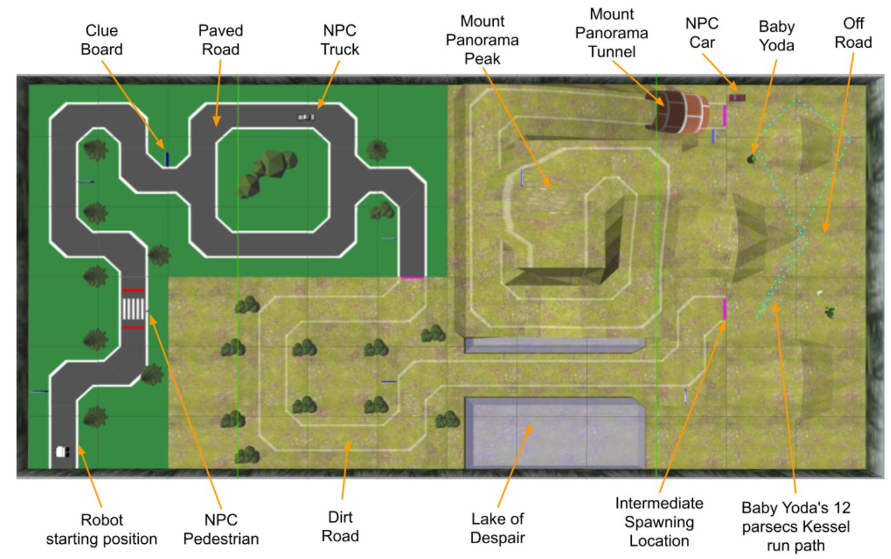
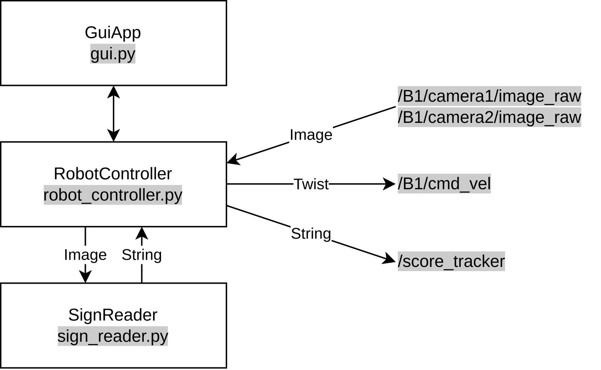
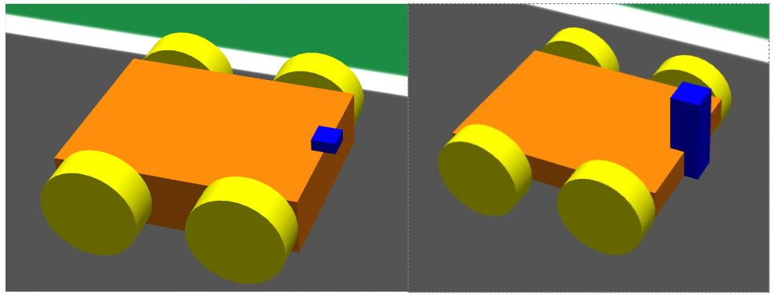
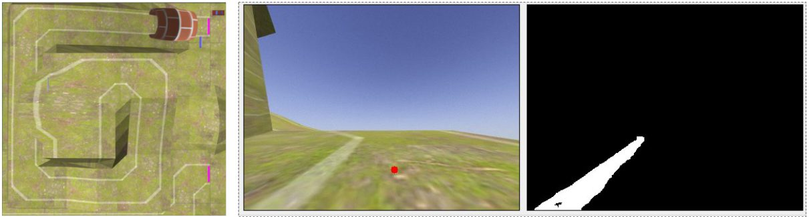
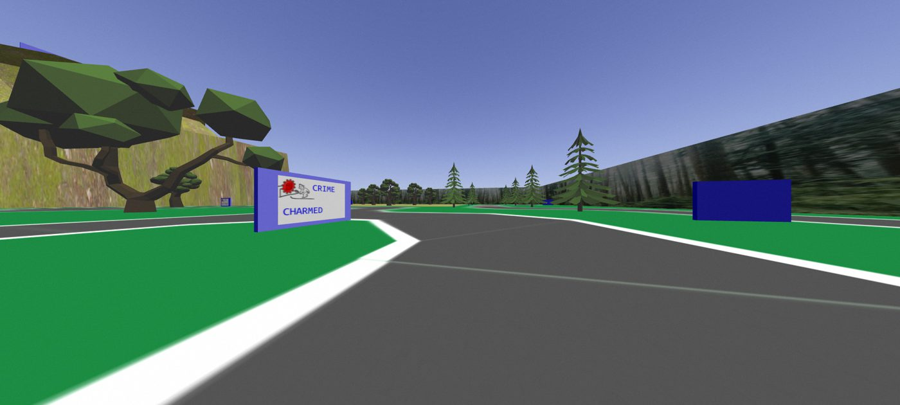
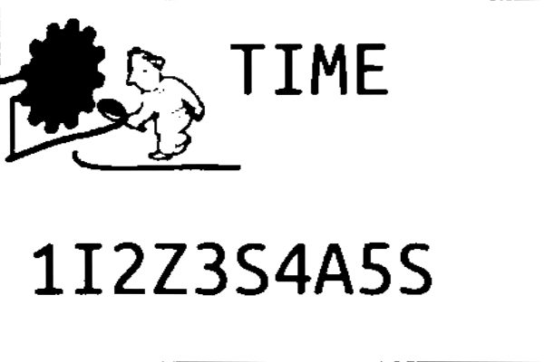
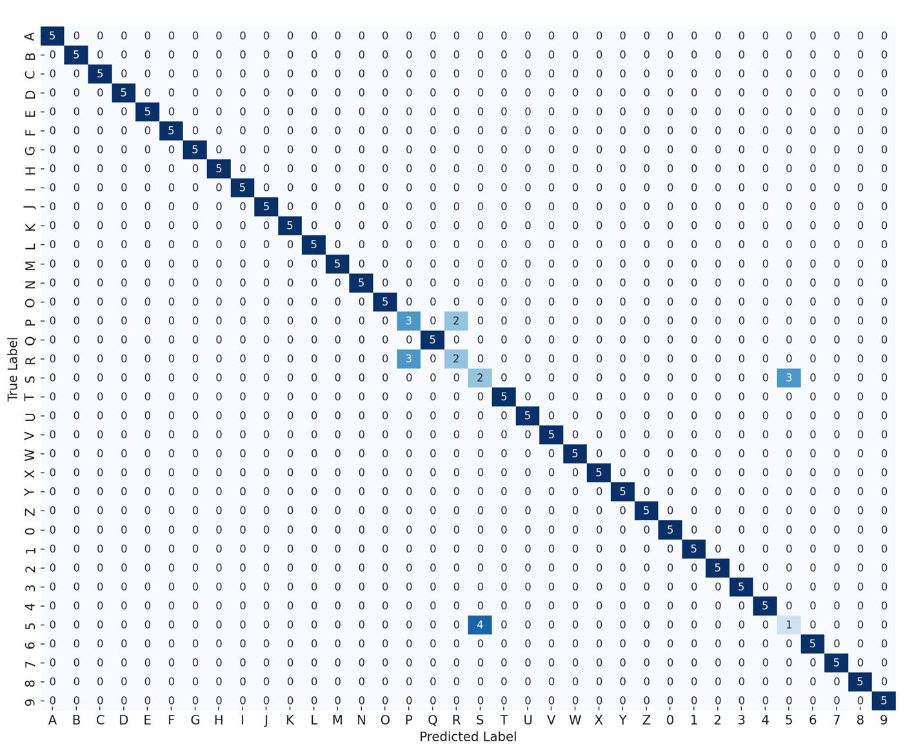
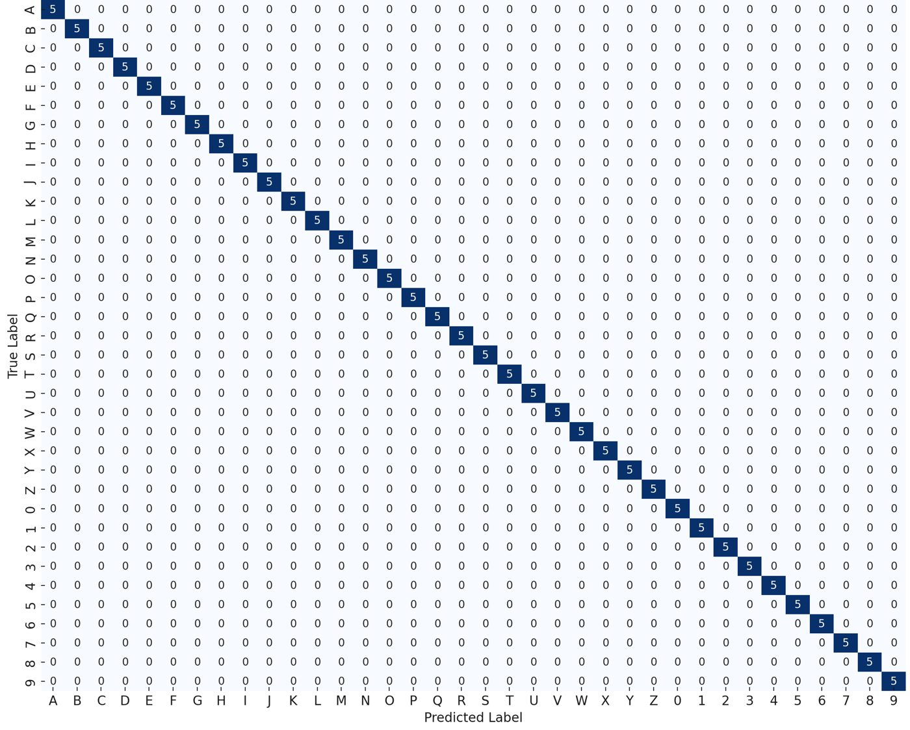

Autonomous Driving & Sign Reading in ROS
ENPH 353 machine-learning competition, UBC. With Raymond Wang, I built a controller for a simulated robot that drives a four-zone Gazebo course, dodges moving obstacles, and reads eight clue boards along the way.

Architecture
Three ROS nodes. RobotController subscribes to the camera topics and publishes velocity commands on /B1/cmd_vel; it runs a state machine that picks a driving strategy per zone and captures sign images as it passes them. SignReader turns those images into strings for /score_tracker. A PyQt GuiApp starts and stops the run, teleports between zones for testing, and shows live frames, masks and per-frame timing.


Two cameras, two jobs
We shrank the robot and stacked two cameras on it. A 400×300 camera at 120 FPS feeds driving; a 3000×1500 camera is only subscribed to for the instant a sign is in view. Staying subscribed to it all the time dropped the frame rate, and at the speeds we were tuned for, a slow loop means erratic driving.

Driving
Driving is proportional control on a single image row: find the target loc, normalize its offset from centre to an error in [−1, 1], steer against it, and slow down linearly as the error grows. What changes per zone is how loc is found: the left road edge on pavement, the white line (after erosion, dilation and small-contour removal) on dirt, the centroid of a pink marker in the roadless section, and on the mountain a white-line threshold that scales with scene brightness because the road starts dark and gets brighter. At 120 Hz it finished the course about 95% of the time.

Reading the signs
The robot never stops for a sign. The high-resolution frame is masked by the sign's blue border, perspective-warped to a flat rectangle, then split into characters: grayscale, Gaussian blur, adaptive Gaussian thresholding, and contour detection in the two text regions. Each bounding box is resized to 43×56 and classified by a small CNN.


The network is two conv/pool stages, dropout, and three dense layers into a 36-way softmax (A–Z, 0–9), small enough not to slow the run. It trains on synthetic data from a generator that renders characters and applies small rotations, affine warps, edge enhancement and blur.
R vs P, 5 vs S
The first model looked fine on paper and still confused visually similar pairs. The confusion matrix made the failure specific, so the fix could be too: generate extra samples targeted at R/P and 5/S, move data from validation into training, add dense capacity, and retrain. Final accuracy was 100% on training and 99.8% on validation, and every sign was read correctly in the competition.


What I'd change
The robot lost 1–2 seconds re-aligning at the tunnel entrance, and pedestrian and truck avoidance relied on start timing rather than detection. With more time, a drone would have side-stepped collisions entirely.
Stack: ROS, Gazebo, Python, OpenCV, TensorFlow/Keras, PyQt.